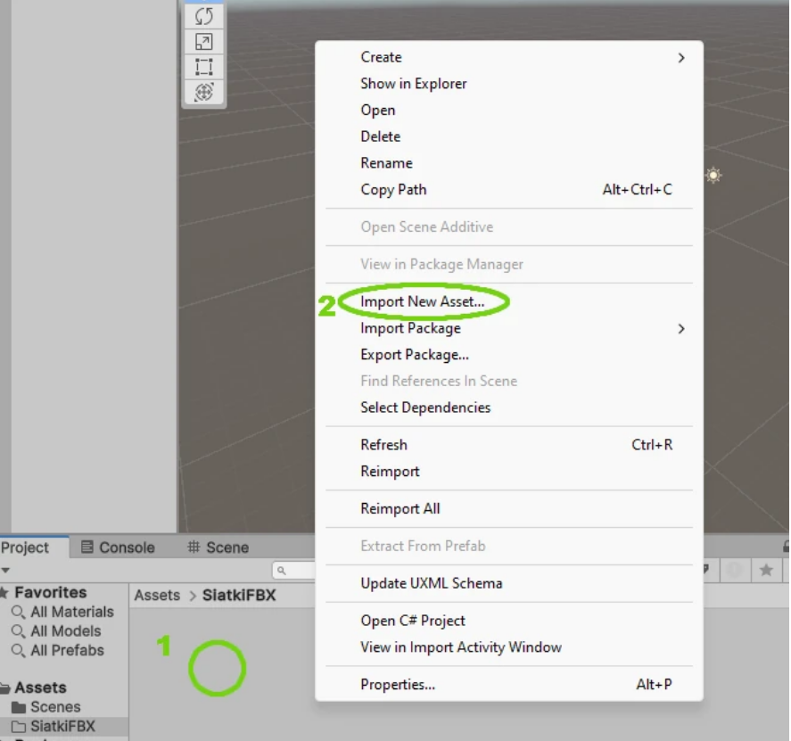

Eksportowanie obiektów z blendera
Przenoszenie modeli z Blendera do Unity można porównać do tłumaczenia książki
na inny język.
Blender to Twój warsztat artystyczny, a Unity to plac budowy gry. Żeby te dwa programy się
dogadały, musisz użyć formatu FBX – to taki uniwersalny plik, który rozumieją oba
narzędzia.
Cały proces zaczynasz w Blenderze. Kiedy masz już gotowy model (np. postać czy mebel), musisz go
zaznaczyć i wybrać opcję eksportu do pliku .fbx (znajdziesz to w menu File ->
Export). Autor
strony zwraca uwagę, że w tym momencie warto zerknąć w ustawienia po prawej stronie okna zapisu.
Chodzi o to, żeby upewnić się, że wysyłasz tylko to, co zaznaczyłeś, a nie całą "brudną" scenę
roboczą.
Kiedy masz już plik na dysku, wchodzisz do Unity. Tutaj dobra rada: zrób sobie najpierw osobny
folder, np. "Modele", żeby nie robić bałaganu. W tym folderze klikasz prawym przyciskiem myszy,
wybierasz Import New Asset i wskazujesz swój plik FBX.
I tu pojawia się najważniejszy moment, który często myli początkujących. Po wrzuceniu modelu do
Unity, może on wyglądać na smutną, szarą bryłę bez kolorów. Dlaczego? Bo kolory i tekstury są
"zamknięte" w środku pliku i Unity nie wie, jak ich użyć.
Musisz wtedy kliknąć na swój model i w bocznym panelu (Inspektorze) znaleźć przyciski do
"wypakowania" materiałów i tekstur. To działa trochę jak rozpakowywanie walizki
po podróży – wyjmujesz ubrania (tekstury) i układasz je na półkach (w folderach). Gdy to
zrobisz, Unity automatycznie "pomaluje" Twój model.
Teraz wystarczy przeciągnąć gotowy obiekt na środek ekranu (na Scenę). Od tej chwili jest on
pełnoprawnym elementem gry – możesz do niego pisać skrypty w C#, kazać mu
skakać, niszczyć się
czy cokolwiek innego, co sobie wymyślisz.



Użycie C# w Unity
Unity działa w oparciu o język programowania C#. Jest to rozwiązanie dobrane tak, aby zachować
równowagę między dużymi możliwościami a łatwością nauki. W przeciwieństwie do starszych i
trudniejszych technologii, C# jest bezpieczniejszy dla twórcy, ponieważ komputer automatycznie
zajmuje się zarządzaniem pamięcią. Dzięki temu programista nie musi martwić się technicznymi
detalami sprzętowymi i "sprzątaniem" kodu, tylko może w pełni skupić się na projektowaniu
rozgrywki.
Cała konstrukcja świata gry opiera się na systemie tak zwanych GameObjectów. Najlepiej wyobrazić
je sobie jako puste pudełka, które same w sobie nie pełnią żadnej funkcji. Aby taki pusty obiekt
stał się postacią, kamerą czy elementem otoczenia, trzeba wypełnić go komponentami. Komponenty
to gotowe cegiełki odpowiedzialne za konkretne cechy, takie jak podleganie grawitacji,
emitowanie światła czy odtwarzanie dźwięku.
Ponieważ gotowe elementy rzadko wystarczają do stworzenia w pełni unikalnej produkcji, niezbędne
staje się pisanie własnych skryptów. Kod stworzony w C# staje się po prostu nowym, autorskim
komponentem, który dokłada się do obiektu. To właśnie te instrukcje ożywiają grę, definiując
precyzyjnie, jak elementy mają reagować na działania gracza – na przykład z jaką siłą postać ma
podskoczyć po wciśnięciu spacji.
W procesie tworzenia można wybrać jedną z dwóch ścieżek. Tradycyjna metoda, oparta na łączeniu
obiektów i komponentów, jest bardzo intuicyjna i w zupełności wystarcza do stworzenia większości
gier. Dla bardzo złożonych symulacji, gdzie na ekranie muszą pojawić się tysiące elementów
jednocześnie, dostępna jest technologia DOTS. Pozwala ona na maksymalne wykorzystanie mocy
nowoczesnych procesorów, choć wymaga od twórcy zmiany myślenia i jest trudniejsza w opanowaniu.
Ogromnym ułatwieniem w codziennej pracy jest ścisła integracja kodu z edytorem wizualnym.
Zmienne zdefiniowane w skryptach są widoczne w panelach sterowania, co pozwala na edycję gry „na
żywo”. Parametry takie jak szybkość biegu czy wysokość skoku można zmieniać w trakcie trwania
rozgrywki, natychmiast obserwując efekty, bez konieczności ciągłego zatrzymywania i ponownego
uruchamiania projektu.